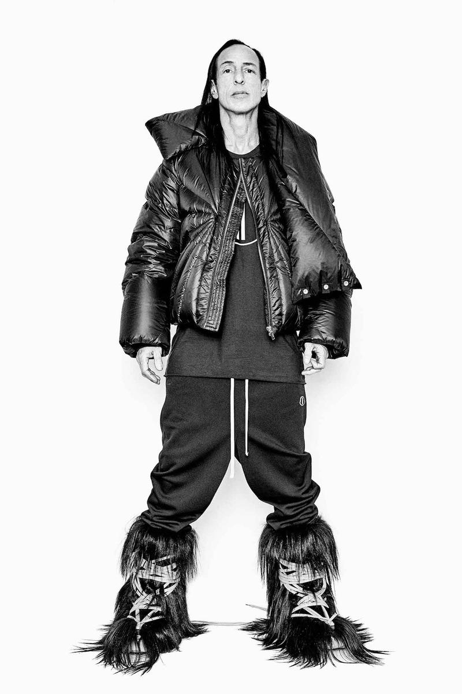

Im going to start this off with this might be the longest one out of the rest this is not because I love hating but I just dont understand this man. Based off these images alone Im just thinking that he just loves himself honestly. Just look at his models and what he makes them wear. I don't know if this man is making moeny from this Im just more curious as to how there is a flowing around this. I may understand owning your own brand and being able to make anything for someone out their to love what you make. I find it hard to find it here. Once I make it big or make myself a million I would truly understand what taste is because apparently I just dont have any. Rick Owen does and I can say this may be a good thing as he stand out from the other brands.
The props I give to people is little but it makes a difference as it points out some gems in the toilet Its just weird to me that anyone with that kind of money start to make his own clothing, or maybe thats the point of his brand to only be used by him that is just out in public. I would believe that story then trying to make this the new wave. Me personally I could go to JCpenny and pull something better then his whole brand and this comes from someone who used to get dressed by their mom. Have fun here.